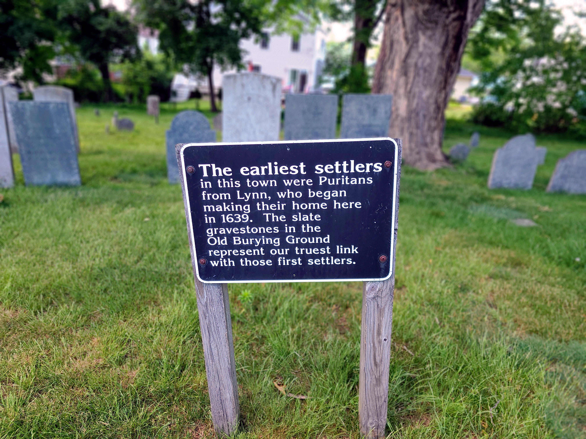

Daniel Gould. Age 43. Death’s head.

MEMENTO MORI
FUGIT HORA
Jonathan Pierpont. Age 44. Death’s head + cherubs (ornate).
A Fruitful Christian And a pastor Who
Did good to all and lov’d all good to do
A tender Husband; and a parent kind:
A Faithful Friend, Which Who oh! Who can find
A preacher, that a bright Example gave
Of Rules he preach’d, the Souls of Men to [ſave]
A PIERPONT All of this here leves his dust
And Waits the Reſurrection of the just

Thomas Sweyn. Age unknown. Iconography unknown.

Elizabeth Green. Age 82. Death’s head.

Mary Bordman. Age 6. Death’s head.

Abigail Gould. Age 31. Cherubs (neo-classical influences?).

Think on death
Elizabeth Emerson. Age ~63. Cherubs.
Why do we mourn departed Friends
Or [shake] at death’s [alarms]
Tis [but] the voice that [Jesus] ſends
To call them to his [arms]

Eliakim Stowell. Age 61. Iconography unkown (neo-classical?).

Lucindia Stow. Age 27. Urn and willow.
Hark! She bids all her friends [adieu],
Some angel calls her to the spheres:
Our eyes the [radient] [saint] [pursue]
Through [li??id] [?descopes] [??ears]

Betsy Stowell. Age 37. Urn and willow.

John Stow. Age unknown. Urn and willow.